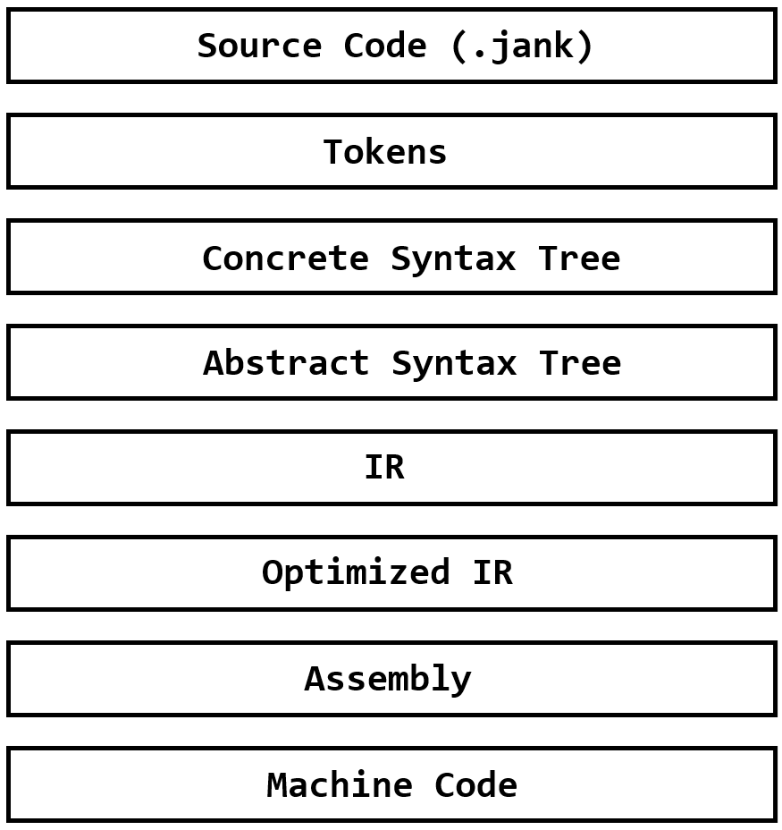
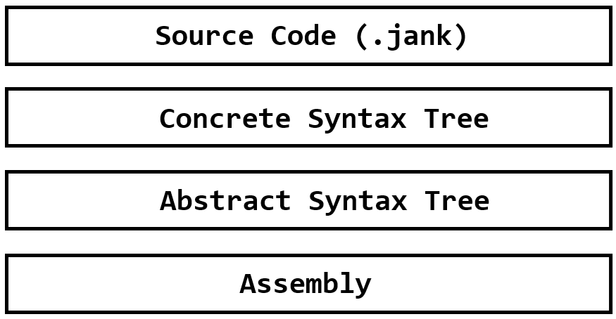
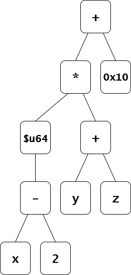
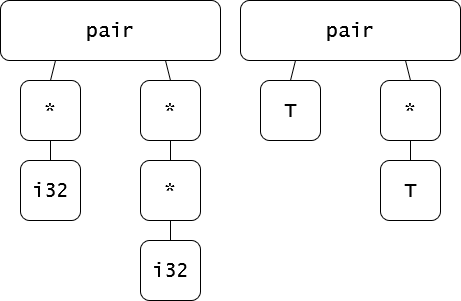
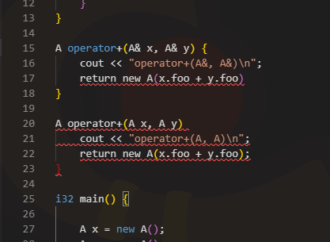

I decided that this summer I would deviate from my normal graphics related projects to instead design a language and build a compiler for it. Thus, jank-pl was born and working on the language turned out to be really fun. If you are interested in making a language yourself, I would highly recommend that while making the language you also try to simultaneously make something in the language. This is so that new language features get motivated naturally and you see whether or not the design decisions that you made with your language are actually good or not. In my case, I'm currently making an operating system using jank-pl, aptly named jank-os. If you want to see the language in its current form, you can take a look at the repo here.
For the design of my language, I decided to copy the behaviour and syntax of C, but with some key additional features:
Once we have the goal of what the language should look like, we need to then figure out what exactly the compiler is going to do. Usually a compiler pipeline looks like this:

First, the compiler should recieve raw source code, tokenize it, and use that token stream to generate a Concrete Syntax Tree. The structure of this tree is defined by some grammar, and the reason it's called 'concrete' is that it still should match one-to-one with the source code. Next, the CST gets refined into only the parts needed for semantic analysis, turning into an Abstract Syntax Tree. Using the AST, we can do stuff like generating struct layouts, resolving templates, enforcing local variable scope, etc; this is the semantic analysis phase. When the semantic analysis phase finishes, we should be left with a desugared, concrete version of the code, which we then turn into some Intermediate Representation. IR should be closer to the generated assembly code, but still general enough such that we can take the IR and emit any flavor of assembly we want. The IR representation is also where the bulk of the optimizations will happen, stuff such as resolving const expressions, removing duplicate calls to pure functions, turning multiplies by powers of 2 into bitshifts, and so on. Finally, the codegen phase will take the optimized IR and generate corresponding assembly code, which is taken by the linker to actually generate the executable machine code. However for my compiler, I cut out a few steps:

I skip generating tokens, the entire IR phase, and machine code generation. Of course, I still need to generate machine code, so after I generate my assembly code I feed it into gcc to generate the machine code. Finally, we need to decide on what CPU architecture and OS our compiler will be targeted towards, I chose ARM x86_64 and Linux.
The goal of the parsing phase is to take in source code and turn it into a concrete syntax tree. First, we'll see how to define a grammar, defining the structure of the concrete syntax tree, then we'll see how we can automate the process of writing a parser based on an EBNF grammar.
EBNF stands for Extended Backus-Naur Form. An EBNF grammar is just a set of rules.
greeting = "hello " , ( "dylan" | "steven" ) ;
In the above grammar, we have defined one rule: greeting. Anything contained within quotes is referred to
as a 'terminal', and they serve as concrete termination points for the parser; they're pretty much just string literals.
Commas denote concatenation and | denotes alternation, so within that scope, the entire scope can match to any one of the terms.
For example, the two valid strings that can match to greeting are hello dylan and hello steven.
greetings = [ greeting , { ", " , greeting } ] ;
We can use rules within other rules, and we've also introduced some new grouping modifiers, {} denotes zero-or-more, and [] denotes zero-or-one.
So for example, hello steven, hello dylan, hello steven and the empty string will match to the above rule.
When defining stuff with EBNF, it's pretty useful to actually define the EBNF grammar itself using EBNF. It might not seem too useful now, but
once we get to automatically generating our EBNF parsers, it'll be a valuable sanity check. Here is my definition of EBNF:
letter = "A" | "B" | "C" | "D" | "E" | "F" | "G"
| "H" | "I" | "J" | "K" | "L" | "M" | "N"
| "O" | "P" | "Q" | "R" | "S" | "T" | "U"
| "V" | "W" | "X" | "Y" | "Z" | "a" | "b"
| "c" | "d" | "e" | "f" | "g" | "h" | "i"
| "j" | "k" | "l" | "m" | "n" | "o" | "p"
| "q" | "r" | "s" | "t" | "u" | "v" | "w"
| "x" | "y" | "z" | "_" ;
digit = "0" | "1" | "2" | "3" | "4" | "5" | "6" | "7" | "8" | "9" ;
symbol = "[" | "]" | "{" | "}" | "(" | ")" | "<" | ">" (* everything except for double quotes and backslash *)
| "'" | "=" | "|" | "." | "," | ";" | "-" | "+"
| "*" | "?" | ":" | "!" | "@" | "#" | "$" | "%"
| "^" | "&" | "/" | "~" | "`" ;
escape = "\\" , ( "n" | "t" | "r" | "f" | "b" | "\"" | "\\" ) ;
identifier = < letter > ;
(* comments can contain everything except for asterisks *)
(* also, idk a better way to handle this without implementing set subtraction in the grammar *)
comment_char = letter | digit | ws
| "[" | "]" | "{" | "}" | "(" | ")" | "<" | ">" (* everything that symbol has except for the asterisk *)
| "'" | "=" | "|" | "." | "," | ";" | "-" | "+" (* but including double quotes and backslash *)
| "?" | ":" | "!" | "@" | "#" | "$" | "%" | "^"
| "&" | "/" | "~" | "`" | "\\" | "\"" ;
comment = "(*" , { comment_char } , "*)" ;
ws = " " | "\n" | "\t" | "\r" | "\f" | "\b" | comment ; (* treat comments as whitespace *)
rws = < ws > ; (* required whitespace *)
ows = { ws } ; (* optional whitespace *)
terminal_char = letter | digit | symbol | escape | " " ;
terminal = "\"" , < terminal_char > , "\"" ;
term = "(" , rws , alternation , rws , ")" (* grouping *)
| "[" , rws , alternation , rws , "]" (* zero or one *)
| "{" , rws , alternation , rws , "}" (* zero or more *)
| "<" , rws , alternation , rws , ">" (* one or more *)
| terminal
| identifier ;
concatenation = term , { rws , "," , rws , term } ;
alternation = concatenation , { rws , "|" , rws , concatenation } ;
rule = identifier , rws , "=" , rws , alternation , rws , ";" ;
include = "#include" , rws , terminal , rws , ";" ;
grammar = { ows , include } , { ows , rule } , ows ;
I also included some extra features such as includes, escapes, and <> which denotes one-or-more. You can see that this grammar also
nicely encodes operator precedence in the concatenation and alternation rules.
Now that we've written our grammar, we still need to write the parser that takes in a string and constructs a CST according to the grammar. Since we don't want to be stuck rewriting our parser every time the grammar of our language needs to change (it will need to change a lot), we probably want to do this automatically. Therefore, we need to write a Parse Generator, a program that takes in some grammar and outputs an executable that can parse whatever is defined by the grammar.
However, we can't really get away from writing any parsing code, we need to write a parser that can parse an EBNF grammar as defined above. I decided that for the parse generator and the language parser, I would stick to a greedy parser as it's easy to write, fast, and I'm willing to design my language grammar around it. To facilitate the parsing, I wrote a little parse controller:
So the general flow for parsing one rule is:
For example, here is what parsing a terminal looks like:
After we can properly parse the EBNF grammar, we then need to perform some semantic checks on it to make sure it's well formed. I just check for double defined identifiers and identifiers that are used, but not defined in a rule. You could further extend this by also checking for non-terminal rules, left-recursive rules, dead alternations, and so on.
Finally, we need to autogenerate parsing code from the grammar we just parsed. There are two parts to this, I'll need to generate the struct definitions for the objects I'm going to be producing, and the parse functions to actually produce those structs. First, the struct definitions, I generate them according to these rules:
terminal struct. "t" + (field index). bool is_t + (field index) fields for disambiguation. Exactly one of these should be true. {} or <>, std::vector will be used to house multiple copies of the internal struct. [], std::optional will be used to house the internal struct. Let's look at an example:
concatenation = term , { rws , "," , rws , term } ;
gets turned into
Note that all my structs also inherit from token. This is just a wrapper that keeps track of some information like where each token starts, how long it is,
what line and column they started on and so on. They aren't needed for compilation, but are very nice for syntax highlighting and error messages.
Now, we just need to generate the static parse functions. Like the struct definitions, I also generate these according to some rules:
nullptr on failure. push_stack(). pop_stack(). rm_stack() and the output is built.
Here are the autogenerated parse functions for the concatenation rule:
Then all you need to do to use this is just include the generated parser.h as a header file, feed it the string to parse, and call the parse
function of your chosen root rule. I would say writing a parse generator is extremely worthwhile, as I've had to change my grammar many times and
this script made it so that I never had to worry about the correctness of my parser. And if you want to later extend your parser to give syntax
errors or be error-tolerant, you can do so relatively easily.
Once we have our CST generated, turning it into an AST is relatively trivial, you just do a tree walk and only take out the stuff you need. The hard part is stripping away all the syntactic sugar and doing semantic checks until you have an AST that is completely desugared and verified to be semantically correct, ready to generate assembly.
Let's go through an example to illustrate what exactly the semantic analysis phase needs to do. Consider this code snippet:
{
i32 x = 'a';
u64 y = 10;
}
u8* z = w + y;
To the parser, this is well formed. However, as jank does not support automatic typecasting, what the program is trying to do does not make sense.
In the second line, we are declaring a 32-bit integer x and assigning it a value of 'a'. In jank, this is a unsigned 8-bit
integer literal, or a u8, so this declaration operation should not be accepted as valid code. Similar mistakes are made in the following lines
such as in the third line where we are trying to assign a i32 to a u64 (decimal integer literals are all i32s),
or in the fifth line where y has gone out of scope and w does not exist.
So how exactly can the semantic analysis phase accomplish all this? First, local expression resolution makes sure that each piece of syntax has a well defined type and meaning. Then, global control flow ties those expressions all together, enforcing local variable lifetimes, and high level flow semantics. It's worth noting that in my compiler if I find a semantic error, I bail immediately instead of continuing on to generate more diagnostic data.
In jank, if you need to ever compute a value or call a function, or pretty much do anything other than high level control statements such as conditionals, loops, or inline assembly, it gets parsed as an expression. Expressions in jank follow C-style operator precedence and are defined by the following grammar:
So for example, an expression like this
$u64 (x - 2) * (y + z) + 0x10
gets automatically turned into an expression tree by the parser, so operator precedence is enforced by the parser.

So now, all we need to do is walk the expression tree, and ensure that all primary (leaf) nodes and operator nodes are well defined. By well defined, I mean that we just need to know the resulting type of each expression subtree as it's the types that determine what operations get performed.
Primary nodes consist of literals, constructor calls, function calls, and identifiers. Literals are easy to resolve, and often you can
force semantic correctness of literals just through syntax. In jank, I support integer, hex, binary, string, and character literals,
which resolve to types i32, u64, u64, u8*, and u8 respectively.
Function and constructor calls are resolved very similarly to each other. When the user writes a function, lets say i32 foo(i32 x),
we store it into a global list of functions, which are differentiated by their 'function signature'. It is pretty much the function identifier
and the ordered list of argument types, so the function signature of the aforementioned function is foo(i32). We don't have the return
type as part of the function signature as that is not specified in the function call. Then to resolve a function call, we just need to generate
the function signature that it matches to by resolving the types of all its argument expressions, and look through the list of globally declared
functions to find a matching signature. For example, foo(1 + 2) will match to the function with signature foo(i32)
and the function call will resolve to type i32. Constructors are just functions with an implicit return type, but other than that
they are handled in exactly the same way. There are of course more complications than that with function call resolution which will be covered in the
templating section.
Finally, identifiers are just references to existing local and global variables. Since all variable identifiers that are simultaneously active are guaranteed to be unique, we can just search the current variable list and find the type of the referenced variable.
Operators are kind of like special functions that take in one or two sub-expressions and combine their results to somehow produce a new result of an arbitrary type. In my compiler there are two types of operators: builtin and overloaded operators. Builtin operators are exactly what they sound like, when I start up semantic analysis, I populate the global operator list with a bunch of hardcoded arithmetic operators for integer types of various bit widths and signednesses. Then, during the function gathering pass, I also gather any operator overloads declared by the user. The syntax for overloads in jank is very similar to C++, however in jank, all overloads are declared in the global context.
struct A {
i32 foo;
A(i32 _foo) {
this.foo = _foo;
}
}
A operator+(A x, A y) {
return new A(x.foo + y.foo);
}
i32 main() {
A x = new A(5);
A y = new A(10);
A z = x + y; //z.foo = 15
return 0;
}
Operators are resolved very much like functions are, I keep a global list of operators and search it using an 'operator signature' when I need one. Of course, there are some operators that have special default behaviours and some that don't appear in the global operator list. For example, the default assignment operator will only assign on exactly matched types, dereferencing and indexing only work on pointer types, and member variable and function access require that the type be a user defined struct, but we'll get to that later.
Finally, if an operator gets replaced by a user defined overload, then I replace it with a primary node that is just a function call to the user defined operator. This is done in the 'elaboration' phase after I'm done doing semantic checks on the expression.
Now that we know how to propagate types, it's important that we also make a distinction between addressable values (l-values) and temporary values (r-values). This distinction is important to make in order to support a few features:
@ returns the memory address of a variable. It can only work on l-values. T&, you need to give it an l-value. ++, --) require l-values as they modify the underlying element in place. and so on. So how do we actually propogate these? It actually isn't too hard, the rule pretty much is that if you're doing a memory access, the result should be an l-value. For example, an array access, struct member variable access, or pointer dereference should return an l-value. The one big exception is with reference types, if a primary node returns a reference type, degenerate it into a normal type but make it into a l-value. If you think about it, reference types are pretty much implicit memory accesses, so it makes sense.
Ok, now we know how to check if a single expression is semantically well formed, given that we know the global state up to that point. The next step is to handle high level control statements. These statements require us to update the global execution state, since expression resolution depends on the evolving context established by variables, scopes, and control flow.
When a variable is declared, we first need to check if the expression attached to the declaration is well formed, and that the resulting type of the expression matches the variable type, and that the variable identifier doesn't already exist. Then, when we resolve future expressions, they can reference the newly added variable from the global variable list.
i32 a = x; //invalid, x has not been declared yet
i32 x = 10;
i32 y = x + 0x5; //invalid, cannot directly add i32 and u64
i32 b = x + 30;
u64 b = $u64 x + 0x300; //invalid, b already exists
i32 c = $u64 (x + b * 2); //invalid, cannot assign u64 to i32
If a variable is declared within a block, it should only be valid within that block. To enforce this, when I enter a block, I push a new frame to the globally maintained 'declaration stack' and when I exit, I pop the top frame off and remove all the variables in the top frame. Then, whenever a new variable is declared, I just need to put it into the top frame of the declaration stack.
Note that I don't put global variables into the declaration stack as they should exist everywhere. Also, implicit scopes should be inserted into for loops, while loops, and each branch of if statements, not just compound statements. Actually, for loops should have two implicit scopes, one specifically for its iterator variable that should be alive across all iterations, and an inner scope that gets reset every iteration. So for example, this should be valid code:
{
if(1) i32 x = 0;
else if(1 == 0) i32 x = 0;
else i32 x = 10;
i32 x = 5;
cout << x << "\n";
}
{
for(i32 i = 0; i < 10; i++) i32 x = 0;
i32 x = 5;
cout << x << "\n";
}
{
while(0) i32 x = 0;
i32 x = 5;
cout << x << "\n";
}
Checking the validity of control statements such as if, for, and while are relatively easy, it's just combining what we've already done. For example, the
expression in the while statement must resolve to a type, and that type must be castable to i32 which is jank's truth type.
The tricky parts come when we want to do some more advanced control flow such as break, continue, and return statements.
For break and continue statements, we just need to make sure that they're contained by a loop. To do this, I keep a 'loop context' stack and for a break or continue statement to be valid, the loop context stack just has to not be empty. It also is useful for codegen as I can easily extract the enclosing loop by looking at the top of the loop stack.
How we enforce return statements depends on the return type of the enclosing function. If the function returns void, then we shouldn't require a
return statement at all, and the user can use a return statement without an expression to bail early. In this case, we should also insert an implicit return
statement at the very end of the function.
However if the enclosing function has a return type, then we need to enforce that the function is always returning.
This means that through any control flow, we need to make sure that we eventually hit a return statement. I implement this via is_always_returning().
Structs allow you to group multiple related fields into one type. They can hold multiple named fields, each with its own type, enabling the construction of reusable containers and datastructures. For the most part, structs can already fit within our current semantic analysis framework, however we'll have to think about struct memory layout generation and constructor/destructor semantics.
For a struct to be semantically valid, we need to be able to generate the layout of its member variables in memory. For example, consider the following struct definition:
struct A {
i32 foo;
u64 bar;
}
foo should be located at an offset of 0 bytes and bar should be located at an offset of 4 bytes.
We can also have structs themselves as member variables, in which case the memory layout of the member variable struct should be directly
inserted into the parent struct.
struct B {
i32 foo;
A bar;
}
//is identical memory layout to the above
struct B {
i32 foo;
i32 A_foo;
u64 A_bar;
}
However for some structs, it's impossible to generate a (finite size) memory layout, for example:
struct T {
i32 foo;
T bar;
}
In this case, since T depends on itself, the amount of memory required for a struct of type T is infinite.
Actually, other than making sure that all the member variable types exist, whether or not the struct definition is self referential is
the only other thing you need to check for to make sure you're able to generate a struct layout (for now).
In jank, all structs are required to have a default constructor, a copy constructor, and a destructor. The default and copy constructors are identified based on their function signatures, while the destructor has some special syntax.
struct string {
u64 cap;
u64 sz;
u8* arr;
//default constructor
string() {
this.cap = $u64 1;
this.sz = $u64 0;
this.arr = $u8* malloc(this.cap);
}
//copy constructor
string(string& other) {
this.cap = other.cap;
this.sz = other.sz;
this.arr = $u8* malloc(this.cap);
for(u64 i = $u64 0; i < this.sz; i++) this.arr[i] = other.arr[i];
}
string(u8* jstr) {
this.cap = strlen(jstr);
this.sz = this.cap;
if(this.cap == $u64 0) this.cap = $u64 1;
this.arr = $u8* malloc(this.cap);
for(u64 i = $u64 0; i < this.sz; i++) this.arr[i] = jstr[i];
}
//destructor
~string() {
free($void* this.arr, this.cap);
}
}
If the user doesn't specify a default constructor, copy constructor, or destructor, the compiler automatically generates them by emitting some custom AST nodes.
When a constructor is called, the compiler first allocates the necessary memory on the heap for the struct, then calls the default constructor on all the member variables from top to bottom, constructing them in place on the heap. Then the actual constructor gets ran. When the destructor is called, it all gets done in reverse, so first the destructor is ran, then the member variables are destructed from bottom to top, finally the heap memory is deallocated. The compiler uses the copy constructor whenever it needs to move a struct around, for example when using the default assignment operator on a struct.
In some cases, the user may want to specify that they already have some memory allocated, and to just construct the struct in place in the
allocated memory. I added the special 'construct in place' operator := to encode this meaning.
vector(vector& other) {
this.cap = other.cap;
this.sz = other.sz;
this.arr = $T* malloc(sizeof(T) * this.cap);
for(u64 i = $u64 0; i < this.sz; i++) this.arr[i] := other.arr[i];
}
Templating is a very powerful feature that allows you to write generic code that can match to many types at once. Rather than defining the same function or struct multiple times for different types, a template allows for a single definition to be instantiated with multiple types as needed by the compiler. Even though it is a very powerful feature, it's not too bad to implement although it does make function call resolution quite alot more difficult.
Suppose you have a templated struct pair<T, U> defined as
and we want to instantiate an instance of pair of type pair<i32, u64>. What my compiler does is just go through the entire
templated struct definition, and does find and replace mapping T to i32 and U to u64. The
result will be a non-templated struct definition that can be then used by our pre-existing struct framework:
Note that I also introduced primitive constructors so that you can seamlessly use primitive types in templates. Of course, this find and replace is blind to semantic correctness, so after we generate this new struct instance, we still have to make sure the struct layout is able to be generated and all member functions are semantically correct. Also, just a check for self referential member variables is no longer sufficient to be able to generate a struct layout, for example consider the struct definition:
Now the size of the struct is not the issue, it's the infinite template nesting that is the issue. To fix this, we can just set a hard cap on the nesting depth.
Finally, how do we actually perform this find and replace? This is the tedious part as for every different type of AST node, we'll have to define
some recursive method that looks into all of its children for templated types. In jank, this is implemented by replace_templated_types()
and the implementation looks kind of like this:
Once we've implemented replace_templated_types() for all AST nodes, then we get templated function and overload generation for free!
Suppose that we have two templated functions with signatures template<T> foo(T) and template<T> foo(vector<T>).
Then, we make the function call: foo(new vector<i32>()). The question is which function should be called?
Ideally, we should call the function that is more specialized to the input, so in this case I would say template<T> foo(vector<T>)
should be called.
Let's rigorously define 'more specialized'. Consider two functions $A$ and $B$. Let the set of function calls that $A$ and $B$ can handle to be $S(A)$ and $S(B)$ respectively. With respect to some function call $F$, I say that $A$ is 'more specialized' for $F$ if $F \in S(A), F \in S(B)$ and $S(A) \subset S(B)$. So our function resolution with template specialization will look something like this:
We have several problems to solve, the first one of them being for some $F$ and $x$, how do we determine if it's true that $F \in S(x)$?
Consider matching the function call foo(pair<i32*, i32**>) to the templated function signature template<T> foo(pair<T, T*>).
How can we infer that T is i32*? First, we can reinterpret the types in the function call and signature as a rooted tree:

Observe that if we simultaneously walk both the function call and function signature type trees, when we arrive at T in the signature
tree, the corresponding subtree within the function call tree must be equal to T. Anything we visit before we arrive at T
must exactly match between the subtrees. If T appears multiple times, then all occurrences of T must map to the exact
same subtree. So we can just walk both trees simultaneously and generate what all the template variables must be. In jank, if we can't figure out
all the values of the template variables just from the function signature, I treat it as a semantic error.
Next, given two templated functions $A, B$, how can we determine if $S(A) \subset S(B)$? We can actually reuse the stuff that we did to determine if a function call can match a templated function, but we instead feed $A$ as the function call to $B$. The idea is that if we can create a mapping from $A$ to $B$, then for any values of the template variables in $A$, we can directly use the mapping to generate the values of the template variables of $B$, therefore $S(A) \subseteq S(B)$. Then, we just need to check that it's impossible to create a mapping from $B$ to $A$, proving $S(A) \subset S(B)$.
Finally, to figure out if there exists $x' \in X$ such that $S(x') \subset S(x)$ for all $x \in X, x \neq x'$, the best solution I came up with is
to just brute force this in $O(|X|^2)$ time. One cool extension to this is that we can also use this to enforce reference semantics. If we
treat T& as a pattern only able to match l-values, and T being able to match both l-values and r-values, we can
just enforce this as a pre-processing step before stripping all references.
One note on implementation: it might be easier to implement this if you just treat all functions as templated functions. So untemplated functions can just be treated as templated functions with no template variables.
Once the compiler makes sure the AST represents a valid program, it's time to generate the assembly code. For now, my compiler directly generates the assembly code from the AST, but in the future I would like to introduce some IR layers between the AST and codegen.
I first need a consistent way for my generated code to keep track of data during execution. This pretty much amounts to designing a stack frame layout, a convention that defines where function arguments, local variables, and return address live on the stack. By establishing this invariant, every function can be generated under the same assumptions which makes codegen simpler and more reliable. In jank, the stack frame looks something like this:
And in assembly, it looks something like this:
# func(x, y) = x + y
func:
# save old %rbp
push %rbp
mov %rsp, %rbp
# 24(%rbp) holds x
movq 24(%rbp), %rax
# 16(%rbp) holds y
movq 16(%rbp), %rbx
# compute return value, put into %rax
add %rbx, %rax
# return old %rbp
pop %rbp
ret
main:
# call func(10, 20)
movq $10, %rax
pushq %rax
movq $20, %rax
pushq %rax
call func
add $16, %rsp # cleanup function arguments
# %rax should now hold 30
As a convention, I also decided that any return values would be placed inside %rax and that all local variables will be placed on the stack.
In addition, every single register is callee saved.
These decisions are mostly for the sake of simplicity as I haven't gotten around to proper register allocation yet.
Before emitting assembly, I preprocess the AST so that all overloaded operators are turned into function calls, therefore all non-leaf nodes
will represent a builtin operator. Then, I emit the assembly such that the expression nodes will be computed in a postorder DFS traversal ordering.
To make it easier, I wrote every builtin operator to have roughly the same interface, for example binary operators will always expect the left
argument in %rax, the right argument in %rbx and if the left argument is an l-value, its address in %rcx.
All builtin operators will place the return value in %rax.
For example, this is what emitting a binary arithmetic operator looks like:
emit_push() is just a wrapper that keeps track of descriptions of what's on the stack and makes sure the descriptions match when emit_pop() is called.
Of course, if the operator has special default behaviour we'll sometimes need to emit some custom code. Probably the most custom code I wrote for an operator was for
the assignment and assign in place operators. I first check if the type being assigned is primitive, and if so, we can just copy the value into the variable's memory location.
Otherwise, we have to invoke the copy constructor. One note on how structs are represented in memory: if you have a variable that 'is' the struct, like A foo = new A(),
I don't actually store the struct on the stack, instead I store a pointer to the struct. This does make it so that A and A* are identical on the stack,
however I have a bunch of code to handle this special case so that it's transparent to the user. So what a constructor really returns is just a pointer to the start of the newly
constructed struct's memory. This decision was mostly made to make stack management easier, this way all variables can be stored in a register and using 8 bytes on the stack.
Calling a function is just a matter of building the arguments properly on the stack, and then doing call label. The function itself is then
responsible for setting up the rest of the stack frame (saving the old %rbp). To build the arguments on the stack, I take advantage of my variable
system to just create compiler temporary variables on the stack that each correspond to an argument. As local variables are stored in order on the stack,
the function call just reinterprets them as part of the called function's stack frame.
When we bind a reference to a l-value, we expect the declared reference to be just an alias to the provided l-value. So in the assembly code, I just treat
the type T& exactly the same as T* when initializing it.
//zero initialize primitive
fout << indent() << "movq $0, " << addr_str << "\n";
//evaluate expr
//%rax = value, %rcx = addr
expr.value()->emit_asm();
//save addr into variable
fout << indent() << "movq %rcx, " << addr_str << "\n";
During expression evaluation I automatically dereference any T&
types so that it's as if we just used the original l-value in the expression.
I didn't like the lack of control over the global variable declaration order across multiple files in languages like C/C++, so I came up with 'global nodes' to remedy this.
My original idea was to dynamically detect dependencies between global variables, however that turned out to be too complicated when I thought about tracking function side effects.
Instead, I settled on the idea that the user has to explicitly encode the dependencies in a global node graph, and the actual declarations can be bound to specific nodes within the graph.
I also provided a node that is always first, __GLOBAL_FIRST__, and any declaration that isn't bound to a node is declared after all declarations bound to nodes.
I found this to be especially useful when writing the kernel for jank-os. For example, if I want to be able to malloc anything in a global variable, I will need the physical memory allocator (PMA) then malloc set up first. Using the global nodes, I can ensure that anything that depends on malloc is set up after malloc is set up, and that malloc gets set up after the PMA.
#global_node PMA;
#global_node MALLOC [PMA];
#global_node BUFFER [MALLOC];
[PMA] i32 pma_init_status = init_pma();
[MALLOC] i32 malloc_init_status = init_malloc();
[BUFFER] u8* buf = $u8* malloc(0x1000);
After using u64 for everything in my OS code, I decided that implementing C-style typedefs is a good idea.
Since it's just a drop-in replacement, we can reuse our template instance generation code to replace all typedef'd types within the AST.
However, we need to be careful in which order we apply the typedefs.
For example, consider the following typedefs:
#typedef pte_t u64;
#typedef pagetable_t pte_t*;
If we apply pte_t then pagetable_t, there may still be some leftover pte_t in the AST, but if we apply pagetable_t then pte_t,
there won't be any of either type left within the AST. In general, draw a directed edge from typedef $A$ to typedef $B$ if $B$ appears somewhere in $A$. All we need to do is find a topological ordering
of the typedefs and then apply them in that order.
While having a working compiler is necessary to use a language, battling syntax errors in a plaintext file for a few hours makes you appreciate syntax highlighting and error squiggles so much more. Just having those features makes the code much easier to read, and makes it so that you don't have to run the compiler to catch syntax errors. To add these features, I created my own implementation of a language server for jank and published it as a VSCode extension.
Language Server Protocol (LSP) aims to solve the many-to-one problem inherent in writing IDE tools for languages. Originally, if you wanted to have comprehensive support for your language, then you would have to provide implementations of your support for all the existing popular IDEs. Instead of doing this, if all the IDEs can agree on one protocol in which to communicate with language support tools, then you would only need to write one implementation, the Language Server, and then all the IDEs which use this protocol can communicate with it.
Microsoft has kindly provided some VSCode extension samples, so I went ahead and copied the LSP Example
as a starting point. To specify to the user which endpoints we have implemented, we can send the details when we initialize the connection.
Since our aim is to provide syntax based highlighting, we just need to implement the semanticTokensProvider endpoint.
const tokenTypesLegend = [
'type', 'string', 'keyword', 'number', 'comment'
]
connection.onInitialize((params: InitializeParams) => {
const result: InitializeResult = {
capabilities: {
textDocumentSync: TextDocumentSyncKind.Incremental,
semanticTokensProvider: {
legend: {
tokenTypes: tokenTypesLegend,
tokenModifiers: []
},
full: true
}
},
};
return result;
});
We just need to specify what types of tokens we're going to return via tokenTypes, and since I'm not going to implement partial parsing we set full: true.
Next, we need to implement the actual endpoint. Since all my parsing code is in C++, I decided to just write a little command line tool that would take in a file and spit out
the highlighting tokens in JSON format. Then for the endpoint, we can just call the tool and send the results to the user.
function runParserCLI(text: string): Promise {
return new Promise((resolve, reject) => {
const parserPath = __dirname + "/parser_cli";
const proc = spawn(parserPath);
let output = '';
proc.stdout.on('data', (chunk) => output += chunk);
proc.stderr.on('data', (err) => console.error(err.toString()));
proc.on('close', (code) => {
if (code !== 0) reject(new Error(`CLI exited with code ${code}`));
else resolve(JSON.parse(output));
});
proc.stdin.write(text);
proc.stdin.end();
});
}
function encodeHighlightTokensLSP(tokens: any[]): number[] {
const data: number[] = [];
let prev_line = 0;
let prev_col = 0;
for (const t of tokens) {
const delta_line = t.line - prev_line;
const delta_col = delta_line === 0 ? t.col - prev_col : t.col;
prev_line = t.line;
prev_col = t.col;
const tokenTypeIndex = tokenTypesLegend.indexOf(t.type);
const tokenModifierBitset = 0;
data.push(delta_line, delta_col, t.length, tokenTypeIndex, tokenModifierBitset);
}
return data;
}
connection.languages.semanticTokens.on(async (params) => {
const uri = params.textDocument.uri;
const document = documents.get(uri);
if (!document) return { data: [] };
const text = document.getText();
const parse_res = await runParserCLI(text);
const highlight_tokens = parse_res["highlight_tokens"];
const highlight_data = encodeHighlightTokensLSP(highlight_tokens);
return { data: highlight_data };
});
To generate the highlighting tokens in parser_cli.cpp, I just produce and walk the syntax tree and have a bunch of hardcoded cases for various tokens I want to highlight.
From here, I'm assuming that you copied the LSP Example provided by Microsoft, are on some flavor of Linux, and using VSCode. To test our extension, we first need to install the correct version of npm:
# install nvm to ensure npm version
curl -o- https://raw.githubusercontent.com/nvm-sh/nvm/v0.39.7/install.sh | bash
# then follow the instructions (have to run some commands)
# finally, install correct version of npm
nvm install 20
nvm use 20
Next, use the shortcut Ctrl + Shift + B to build. Then, Ctrl + Shift + D should open up a sidebar with a 'Debug' button at the top. Clicking it will open
up a new window with your extension active.
One issue with what we currently have is that once we make a syntax error, all of our highlighting goes away. This is because our current greedy parser only succeeds if the entire program is well formed; if there exists a syntax error the parser fails and returns nothing. It would be nice if our text highlighting didn't go away while typing, and it would be even better if we also told the user where a syntax error was via some error squiggles. We can do both of these by introducing error rules to our parser.
The idea behind an error rule is to provide a fallback rule that will consume anything in the case that some other rule doesn't parse. For now, we can say that error
is a predefined identifier in our grammar and it consumes everything.
It's considered a parse success if it consumes at least one character and a parse failure otherwise.
So for example, we can use this inside compound_statement rule to provide a catch-all in case we can't parse a statement.
statement = simple_statement
| control_statement
| compound_statement ;
simple_statement = "return" , [ rws , expression ] , ows , ";"
| "break" , ows , ";"
| "continue" , ows , ";"
| declaration , ows , ";"
| expression , ows , ";"
| inline_asm , ows , ";" ;
control_statement = "if" , ows , "(" , ows , expression , ows , ")" , ows , statement , [ rws , "else" , rws , statement ]
| "while" , ows , "(" , ows , expression , ows , ")" , ows , statement
| "for" , ows , "(" , ows , [ declaration ] , ows , ";" , ows , [ expression ] , ows , ";" , ows , [ expression ] , ows , ")" , ows , statement ;
compound_statement = "{" , ows , { ( statement | error ) , ows } , "}" ;
However this means that once we see a malformed statement, we will parse the rest of the file as one big error token.
This is fine if we just want our syntax highlighting to not disappear, but it would be more useful if we could somehow recover after encountering an error so that the user knows
exactly where the error is (or at least which statment the error occurred).
To do this, we want a way to tell the error rule to stop parsing. In this case, since every statement except for compound_statement ends with a semicolon, we can
tell the error rule to keep parsing until it sees a semicolon.
Note that our selection of the error termination rule can be somewhat arbitrary as once we've started parsing an error token, the input is already considered malformed.
One more issue we have to consider is that there may be some containing structure that we still want to parse. In the case of compound_statement, we still need to parse
a bracket to end it. So it looks like we can add "}" as an alternative to ";" in the error rule stop condition, however there is a small nuance: when we see }
we want the error rule to stop immediately, while if we see ; we want the error rule to first consume ; and then stop.
I call these two the 'stop' and 'consume' rules and I found that these two together make for some decent error handling.
So the final version of compound_statement looks like
compound_statement = "{" , ows , { ( statement | error( "}" & ";" ) ) , ows } , "}" ;
Finally, we need to report the error tokens back to the user so that VSCode can render error squiggles. We can report errors to the user by sending a diagnostics notification with the encoded tokens. It's sufficient to send the diagnostics notification every time the user requests highlighting tokens.
If everything works, you should have nice, error tolerant, syntax highlighting :3

What I have right now isn't really a compiler, it's more of a compiler frontend plus some assembly codegen tacked on top. This hardcoded codegen makes it so that supporting other CPU architectures and OSes is relatively hard as I would need to rewrite generating the code from the AST instead of dropping in different instructions. And using gcc for machine code generation seems kind of like cheating. So here is my list of things I want to implement in the future.